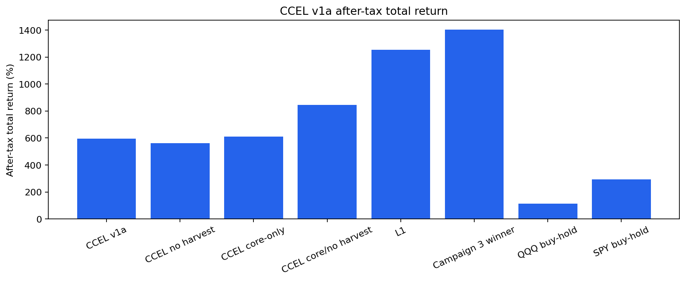
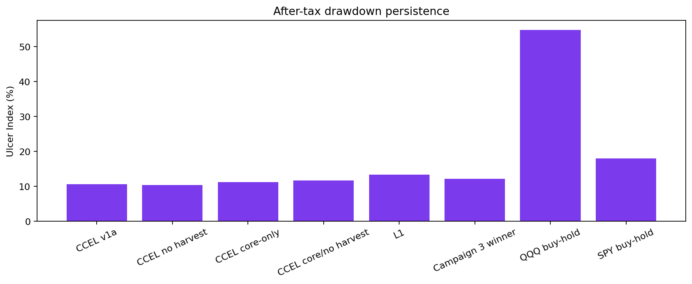
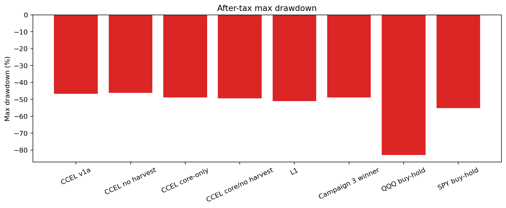
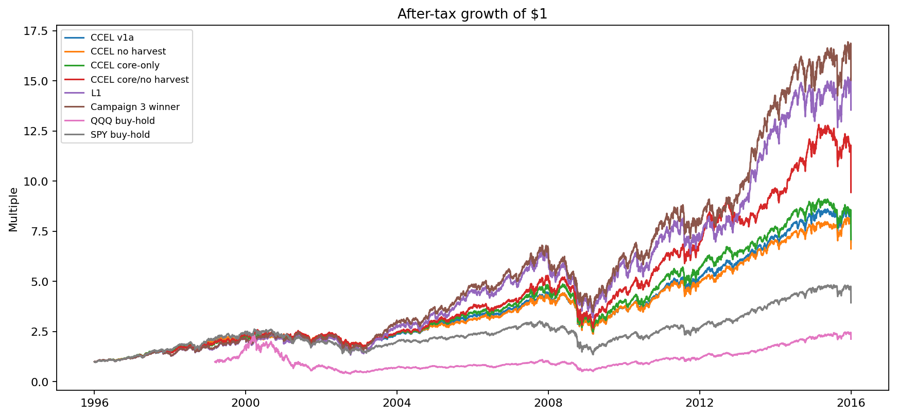

Generated 2026-06-13T21:45:01.224090+00:00 at git SHA 56351e9. Window: 1996-01-01 to 2015-12-31. OOS starts 2014-01-01.
| Arm | Strategy Used | Tax / Exit Rule |
|---|---|---|
| CCEL v1a | Buy-only deployment into the current campaign basket; equal-weight at entry; winners drift and are not trimmed. | FIFO lots, ST/LT rates 32%/20%, wash-sale loss deferral, monthly harvesting, probation exits. Harvest proceeds use exposure-neutral replacement by default. |
| CCEL no harvest | Same as CCEL v1a, but the explicit loss-harvesting rule is disabled. | Taxes still apply to any probation/fundamental exits. This isolates harvest timing from the rest of the management layer. |
| CCEL core-only | All positions are treated as core; probation exits are disabled while exposure-neutral harvesting remains active. | Tests whether probation logic adds value beyond core compounding plus harvests. |
| CCEL core/no harvest | Core-only hold logic with no explicit harvesting. | Lowest-turnover CCEL proxy ablation. |
| L1 | Campaign 2 L1 volatility-targeted equal-weight basket. | Post-processed through the same FIFO/wash/annual-tax research model. |
| Campaign 3 winner | Best L1 candidate from Campaign 3 where available: L1_tv15_min25_band40. | Post-processed through the same research tax model. |
| QQQ buy-hold | QQQ buy-and-hold benchmark. | Terminal liquidation tax applied at the end of the window. |
| SPY buy-hold | SPY buy-and-hold benchmark. | Terminal liquidation tax applied at the end of the window. |
| Arm | Terminal Wealth | Total Return | CAGR | Vol | Sharpe | Sortino | Max DD | Calmar | Ulcer | Turnover | Costs | Trades |
|---|---|---|---|---|---|---|---|---|---|---|---|---|
| CCEL v1a | 701726.456 | 594.69% | 10.19% | 18.83% | 0.610 | 0.782 | -46.73% | 0.218 | 10.58% | 0.323 | 322.391 | 1087.000 |
| CCEL no harvest | 669910.242 | 563.19% | 9.93% | 18.97% | 0.595 | 0.765 | -46.20% | 0.215 | 10.40% | 0.069 | 69.168 | 43.000 |
| CCEL core-only | 716665.164 | 609.48% | 10.30% | 19.68% | 0.597 | 0.772 | -48.79% | 0.211 | 11.23% | 0.538 | 537.402 | 1581.000 |
| CCEL core/no harvest | 953934.933 | 844.37% | 11.89% | 19.87% | 0.666 | 0.859 | -49.50% | 0.240 | 11.73% | 0.050 | 49.924 | 22.000 |
| L1 | 1355343.531 | 1255.34% | 13.94% | 21.82% | 0.708 | 0.914 | -51.11% | 0.273 | 13.38% | 1.897 | 10691.836 | 13353.000 |
| Campaign 3 winner | 1504019.968 | 1404.02% | 14.53% | 20.41% | 0.767 | 1.011 | -48.92% | 0.297 | 12.18% | 1.547 | 8958.819 | 8696.000 |
| QQQ buy-hold | 212626.432 | 112.99% | 4.61% | 29.64% | 0.300 | 0.402 | -82.96% | 0.056 | 54.81% | 0.060 | 49.963 | 1.000 |
| SPY buy-hold | 398698.927 | 294.18% | 7.11% | 20.25% | 0.441 | 0.563 | -55.19% | 0.129 | 17.96% | 0.050 | 49.966 | 1.000 |
| Comparison | Terminal Wealth Delta | CAGR Delta | Ulcer Delta | Interpretation |
|---|---|---|---|---|
| Exposure-neutral harvesting | 31816.214 | 0.26% | 0.18% | Positive means the harvest rule plus wash-safe replacement helped; this is not standalone tax alpha. |
| Probation sleeve | -14938.708 | -0.12% | -0.65% | Positive means probation logic helped. |
| Core exposure-neutral harvest | -237269.769 | -1.59% | -0.50% | Positive means core-level harvest replacement helped without momentum-ranked new-name rotation. |
| Year | CCEL v1a | CCEL no harvest | CCEL core-only | CCEL core/no harvest | L1 | Campaign 3 winner | QQQ buy-hold | SPY buy-hold |
|---|---|---|---|---|---|---|---|---|
| 1996 | 17.86% | 18.40% | 21.54% | 20.34% | 19.52% | 19.19% | 21.20% | |
| 1997 | 28.84% | 30.66% | 27.49% | 24.46% | 19.91% | 19.78% | 33.47% | |
| 1998 | 29.62% | 30.22% | 22.91% | 28.26% | 25.20% | 26.12% | 28.69% | |
| 1999 | 18.64% | 20.34% | 21.77% | 25.24% | 23.02% | 23.08% | 78.93% | 20.39% |
| 2000 | -1.41% | -3.10% | -0.34% | -3.47% | 0.51% | 3.73% | -36.11% | -9.74% |
| 2001 | -1.52% | -0.19% | -1.84% | 1.34% | -0.18% | 1.20% | -33.34% | -11.76% |
| 2002 | -18.99% | -20.10% | -17.70% | -20.69% | -26.07% | -24.03% | -37.36% | -21.58% |
| 2003 | 31.00% | 30.98% | 32.51% | 33.05% | 74.39% | 73.04% | 49.64% | 28.18% |
| 2004 | 17.79% | 14.28% | 18.66% | 22.88% | 21.59% | 21.71% | 10.53% | 10.70% |
| 2005 | 14.14% | 9.49% | 15.63% | 20.19% | 29.57% | 28.12% | 1.56% | 4.83% |
| 2006 | 13.22% | 14.38% | 13.25% | 10.24% | 15.82% | 15.36% | 7.14% | 15.84% |
| 2007 | 20.39% | 21.40% | 23.93% | 29.21% | 21.96% | 20.71% | 19.02% | 5.15% |
| 2008 | -28.97% | -27.70% | -31.32% | -35.39% | -34.49% | -33.72% | -41.72% | -36.79% |
| 2009 | 17.18% | 19.49% | 21.05% | 36.17% | 44.57% | 44.08% | 54.66% | 26.35% |
| 2010 | 23.61% | 22.70% | 26.03% | 29.53% | 21.69% | 26.10% | 20.14% | 15.05% |
| 2011 | 13.84% | 9.08% | 12.53% | 15.16% | 0.37% | 1.33% | 3.48% | 1.89% |
| 2012 | 13.65% | 15.01% | 13.32% | 18.91% | 11.43% | 12.78% | 18.11% | 15.99% |
| 2013 | 24.68% | 24.82% | 21.78% | 18.42% | 59.76% | 56.22% | 36.63% | 32.31% |
| 2014 | 12.94% | 9.56% | 13.25% | 21.40% | 9.92% | 9.86% | 19.18% | 13.46% |
| 2015 | -15.96% | -14.45% | -19.19% | -19.44% | -5.79% | -4.10% | -3.36% | -14.74% |




| Arm | Window | Return | Max DD | Exposure | Trades |
|---|---|---|---|---|---|
| CCEL v1a | 1998 LTCM / Risk Shock | 0.24% | -12.69% | 99.96% | 55.000 |
| CCEL v1a | 2000-2002 Dot-Com Drawdown | -16.01% | -30.26% | 99.96% | 227.000 |
| CCEL v1a | 2001-09-11 Shock | -10.45% | -10.45% | 99.88% | 0.000 |
| CCEL v1a | 2003 Recovery | 37.99% | -5.69% | 99.97% | 74.000 |
| CCEL v1a | 2004-2006 Normalization | 53.76% | -7.95% | 100.00% | 0.000 |
| CCEL v1a | 2007-2009 Global Financial Crisis | -44.96% | -46.73% | 99.98% | 77.000 |
| CCEL v1a | 2008 Lehman Shock | -31.61% | -34.65% | 99.98% | 25.000 |
| CCEL v1a | 2011 Eurozone / US Debt Shock | -11.77% | -14.88% | 100.00% | 0.000 |
| CCEL no harvest | 1998 LTCM / Risk Shock | 1.08% | -12.68% | 100.00% | 3.000 |
| CCEL no harvest | 2000-2002 Dot-Com Drawdown | -16.35% | -30.08% | 99.92% | 0.000 |
| CCEL no harvest | 2001-09-11 Shock | -9.76% | -9.76% | 99.91% | 0.000 |
| CCEL no harvest | 2003 Recovery | 38.08% | -6.01% | 99.91% | 0.000 |
| CCEL no harvest | 2004-2006 Normalization | 43.98% | -8.29% | 99.94% | 0.000 |
| CCEL no harvest | 2007-2009 Global Financial Crisis | -44.10% | -46.20% | 99.95% | 0.000 |
| CCEL no harvest | 2008 Lehman Shock | -32.53% | -35.36% | 99.94% | 0.000 |
| CCEL no harvest | 2011 Eurozone / US Debt Shock | -11.69% | -14.83% | 99.96% | 0.000 |
| CCEL core-only | 1998 LTCM / Risk Shock | 0.44% | -12.56% | 99.90% | 46.000 |
| CCEL core-only | 2000-2002 Dot-Com Drawdown | -15.38% | -31.58% | 99.93% | 382.000 |
| CCEL core-only | 2001-09-11 Shock | -10.21% | -10.21% | 100.00% | 0.000 |
| CCEL core-only | 2003 Recovery | 40.35% | -5.35% | 99.97% | 64.000 |
| CCEL core-only | 2004-2006 Normalization | 57.48% | -9.75% | 99.98% | 106.000 |
| CCEL core-only | 2007-2009 Global Financial Crisis | -47.08% | -48.79% | 99.97% | 136.000 |
| CCEL core-only | 2008 Lehman Shock | -32.18% | -35.46% | 99.92% | 59.000 |
| CCEL core-only | 2011 Eurozone / US Debt Shock | -13.72% | -15.68% | 99.99% | 0.000 |
| CCEL core/no harvest | 1998 LTCM / Risk Shock | 1.58% | -13.27% | 99.94% | 0.000 |
| CCEL core/no harvest | 2000-2002 Dot-Com Drawdown | -20.57% | -33.87% | 99.96% | 0.000 |
| CCEL core/no harvest | 2001-09-11 Shock | -10.41% | -10.41% | 99.95% | 0.000 |
| CCEL core/no harvest | 2003 Recovery | 40.09% | -5.41% | 99.95% | 0.000 |
| CCEL core/no harvest | 2004-2006 Normalization | 63.50% | -10.22% | 99.97% | 0.000 |
| CCEL core/no harvest | 2007-2009 Global Financial Crisis | -47.23% | -49.50% | 99.98% | 0.000 |
| CCEL core/no harvest | 2008 Lehman Shock | -34.41% | -36.54% | 99.97% | 0.000 |
| CCEL core/no harvest | 2011 Eurozone / US Debt Shock | -11.04% | -14.04% | 99.98% | 0.000 |
| L1 | 1998 LTCM / Risk Shock | 1.73% | -11.20% | 70.91% | 216.000 |
| L1 | 2000-2002 Dot-Com Drawdown | -5.47% | -29.05% | 86.97% | 2397.000 |
| L1 | 2001-09-11 Shock | -8.52% | -8.52% | 75.82% | 25.000 |
| L1 | 2003 Recovery | 57.10% | -4.09% | 95.22% | 388.000 |
| L1 | 2004-2006 Normalization | 75.00% | -10.23% | 98.83% | 1434.000 |
| L1 | 2007-2009 Global Financial Crisis | -31.77% | -32.94% | 75.70% | 1466.000 |
| L1 | 2008 Lehman Shock | -17.21% | -20.17% | 48.78% | 306.000 |
| L1 | 2011 Eurozone / US Debt Shock | -14.73% | -15.62% | 71.69% | 231.000 |
| Campaign 3 winner | 1998 LTCM / Risk Shock | 0.85% | -11.24% | 69.91% | 120.000 |
| Campaign 3 winner | 2000-2002 Dot-Com Drawdown | -4.83% | -28.25% | 86.07% | 1374.000 |
| Campaign 3 winner | 2001-09-11 Shock | -8.61% | -8.61% | 76.77% | 25.000 |
| Campaign 3 winner | 2003 Recovery | 57.23% | -4.09% | 94.26% | 307.000 |
| Campaign 3 winner | 2004-2006 Normalization | 75.15% | -10.21% | 98.88% | 1039.000 |
| Campaign 3 winner | 2007-2009 Global Financial Crisis | -31.87% | -33.00% | 76.19% | 745.000 |
| Campaign 3 winner | 2008 Lehman Shock | -17.85% | -20.80% | 49.15% | 112.000 |
| Campaign 3 winner | 2011 Eurozone / US Debt Shock | -13.43% | -14.42% | 72.56% | 145.000 |
| QQQ buy-hold | 2000-2002 Dot-Com Drawdown | -82.47% | -82.96% | 99.97% | 0.000 |
| QQQ buy-hold | 2001-09-11 Shock | -17.32% | -17.32% | 99.96% | 0.000 |
| QQQ buy-hold | 2003 Recovery | 50.51% | -7.06% | 99.96% | 0.000 |
| QQQ buy-hold | 2004-2006 Normalization | 20.61% | -17.26% | 99.97% | 0.000 |
| QQQ buy-hold | 2007-2009 Global Financial Crisis | -51.54% | -53.39% | 99.97% | 0.000 |
| QQQ buy-hold | 2008 Lehman Shock | -39.21% | -40.41% | 99.96% | 0.000 |
| QQQ buy-hold | 2011 Eurozone / US Debt Shock | -12.27% | -16.10% | 99.98% | 0.000 |
| SPY buy-hold | 1998 LTCM / Risk Shock | 1.86% | -13.02% | 99.99% | 0.000 |
| SPY buy-hold | 2000-2002 Dot-Com Drawdown | -42.33% | -47.51% | 99.99% | 0.000 |
| SPY buy-hold | 2001-09-11 Shock | -11.27% | -11.27% | 99.99% | 0.000 |
| SPY buy-hold | 2003 Recovery | 39.51% | -5.50% | 99.99% | 0.000 |
| SPY buy-hold | 2004-2006 Normalization | 34.49% | -7.59% | 99.99% | 0.000 |
| SPY buy-hold | 2007-2009 Global Financial Crisis | -55.19% | -55.19% | 99.99% | 0.000 |
| SPY buy-hold | 2008 Lehman Shock | -36.81% | -39.21% | 99.99% | 0.000 |
| SPY buy-hold | 2011 Eurozone / US Debt Shock | -16.09% | -17.89% | 99.99% | 0.000 |
Adjusted daily OHLC is used where available; this is a survivorship-biased proxy using the current campaign basket.
| Ticker | Sector | First Date | Last Date | Rows | Starts Late |
|---|---|---|---|---|---|
| AAPL | Information Technology | 1996-01-02 | 2015-12-31 | 5036 | no |
| AEP | Utilities | 1996-01-02 | 2015-12-31 | 5036 | no |
| AMD | Information Technology | 1996-01-02 | 2015-12-31 | 5036 | no |
| AMZN | Consumer Discretionary | 1997-05-15 | 2015-12-31 | 4689 | yes |
| BA | Industrials | 1996-01-02 | 2015-12-31 | 5036 | no |
| BRK-B | Financials | 1996-05-09 | 2015-12-31 | 4946 | yes |
| CAT | Industrials | 1996-01-02 | 2015-12-31 | 5036 | no |
| COP | Energy | 1996-01-02 | 2015-12-31 | 5036 | no |
| COST | Consumer Staples | 1996-01-02 | 2015-12-31 | 5036 | no |
| CVX | Energy | 1996-01-02 | 2015-12-31 | 5036 | no |
| D | Utilities | 1996-01-02 | 2015-12-31 | 5036 | no |
| FCX | Materials | 1996-01-02 | 2015-12-31 | 5036 | no |
| GE | Industrials | 1996-01-02 | 2015-12-31 | 5036 | no |
| GOOGL | Communication Services | 2004-08-19 | 2015-12-31 | 2863 | yes |
| HD | Consumer Discretionary | 1996-01-02 | 2015-12-31 | 5036 | no |
| JNJ | Health Care | 1996-01-02 | 2015-12-31 | 5036 | no |
| JPM | Financials | 1996-01-02 | 2015-12-31 | 5036 | no |
| KO | Consumer Staples | 1996-01-02 | 2015-12-31 | 5036 | no |
| LIN | Materials | 1996-01-02 | 2015-12-31 | 5036 | no |
| LLY | Health Care | 1996-01-02 | 2015-12-31 | 5036 | no |
| META | Communication Services | 2012-05-18 | 2015-12-31 | 911 | yes |
| NEE | Utilities | 1996-01-02 | 2015-12-31 | 5036 | no |
| NEM | Materials | 1996-01-02 | 2015-12-31 | 5036 | no |
| NFLX | Communication Services | 2002-05-23 | 2015-12-31 | 3427 | yes |
| NVDA | Information Technology | 1999-01-22 | 2015-12-31 | 4264 | yes |
| TSLA | Consumer Discretionary | 2010-06-29 | 2015-12-31 | 1388 | yes |
| UNH | Health Care | 1996-01-02 | 2015-12-31 | 5036 | no |
| V | Financials | 2008-03-19 | 2015-12-31 | 1962 | yes |
| WMT | Consumer Staples | 1996-01-02 | 2015-12-31 | 5036 | no |
| XOM | Energy | 1996-01-02 | 2015-12-31 | 5036 | no |
python -m src.regime.cli ccel-campaign run --start 1996-01-01 --end 2015-12-31 --oos-start 2014-01-01 --campaign-dir data/campaign/ccel_v1a_1996_2015 --report-dir output/ccel_v1a_1996_2015_report --resume